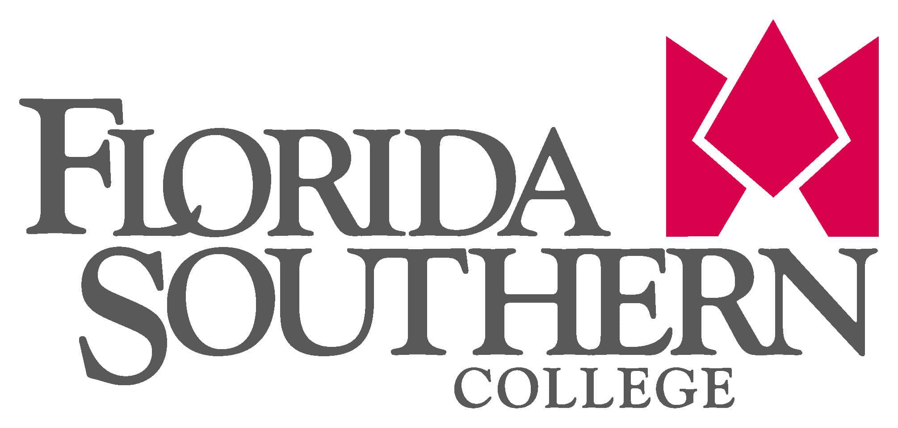
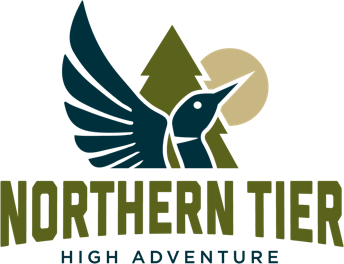
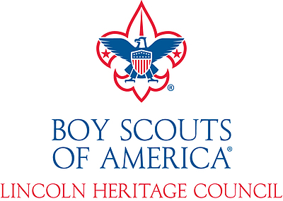

Florida Southern College, founded in 1883 in Lakeland, Florida, is a private institution enrolling over 3,000 students from across the U.S. and abroad, offering more than 70 undergraduate and graduate degree programs in fields like business, nursing, and the liberal arts. The college is nationally recognized for its personalized academic experience, with a low student-faculty ratio and the world’s largest single-site collection of Frank Lloyd Wright architecture.

Adventure Recreation & Risk Management Coordinator
August 2024 - Current
Provide oversight and management of all adventure recreation programs, including adventure trips, waterfront activities, and climbing wall operations. Departmental lead for risk management focusing on health and safety.

District Director
July 2021 - July 2023
The mission of the Boy Scouts of America is to prepare young people to make ethical and moral choices over their lifetimes by instilling in them the values of the Scout Oath and Law.
The Greater Tampa Bay Area Council is a local chapter of the Boy Scouts of America and is a 501c3 nonprofit organization. The council serves 11,000 families living across nine counties surrounding Tampa, FL.
Provided organizational leadership to all operations within assigned territory (Polk, Highlands, and Hardee counties) including membership growth, new business development, fundraising, and program. Served as the direct manager for an entry level executive.
- Achieved 6.5% year-over-year membership growth in 2022, earning CEO's Winners Circle Award.
- Territory is tracking 18% ahead of year over year membership as of June 2023.
- Increased council-wide day camp attendance by 132% in 2022, while serving as the project lead.
- Established 10 new program sites through utilization of the BSA sales model, expanding opportunities for participation.
- Secured funding through the United Way of Central Florida and the GiveWell Community Foundation, which enabled programming for under-served populations.
Program Director
May 2019 - June 2020
The mission of the Boy Scouts of America is to prepare young people to make ethical and moral choices over their lifetimes by instilling in them the values of the Scout Oath and Law.
The Three Fires Council is a local chapter of the Boy Scouts of America and is a 501c3 nonprofit organization. The council serves 14,000 families living west of Chicago, Illinois in DeKalb, DuPage, Kane, Kendall, and parts of Cook and Will counties.
Supported executive board and subcommittee volunteers in all aspects of program delivery, including camping, activities, training, properties, and enterprise risk management for 14,000 registered youth members and 5,000 adult volunteers across five counties in northern Illinois. Accountable for $1.1 million income from year-round activities, summer camp operations, and property management for two camps totaling 575 acres.
- Salvaged over $200,000 in income by developing a COVID-19 summer camp plan that exceeded state guidelines enabling over 530 teens to have a weeklong camp experience.
- Beat expectations of strategic plan by 5% or $17,886 for activities and training grossing $376,070.
- Outperformed best year in the past three by 9% or 434 visitors with 5,250 total customers at two camp properties in 2019.
- Saved $17,564 or 8.4% on property management budgets in 2019.
- Achieved accredited status for all day camps (8) and residential summer camps (2).
- Conceptualized and lead creation of home camp program which generated 300 sales in four weeks.
- Organized two sold out new member program events attracting over 800 participants.
- Developed multiple Microsoft Access databases utilizing Visual Basic, SQL, and Office365 automation to support functions of staff hiring, purchasing, and budget tracking in this and previous roles.
District Director
October 2018 - May 2019
The mission of the Boy Scouts of America is to prepare young people to make ethical and moral choices over their lifetimes by instilling in them the values of the Scout Oath and Law.
The Three Fires Council is a local chapter of the Boy Scouts of America and is a 501c3 nonprofit organization. The council serves 14,000 families living west of Chicago, Illinois in DeKalb, DuPage, Kane, Kendall, and parts of Cook and Will counties. In this role, I primarily served members in the northeast portion of DuPage county.
Worked through a volunteer committee to carry out operational functions including membership, fundraising, and program within assigned territory. Served as the direct manager for an entry level district executive in a neighboring territory and served as a back-up executive for the area. Combined year-end membership of 2,365 youth participants.
- Recognized as one of the top 100 executives in the central region for membership growth in 2019.
- Achieved attendance record of 1,535 Scouts at the largest single day merit badge event in the BSA grossing over $70,000.
- Increased camp attendance by 25% over prior year through targeted promotional strategies.

Associate Program Director
December 2017 - October 2018
The mission of the Boy Scouts of America is to prepare young people to make ethical and moral choices over their lifetimes by instilling in them the values of the Scout Oath and Law.
Northern Tier is the Boy Scouts of America’s gateway to adventure in the Great Northwoods. In the summer, Scouts from Northern Tier’s three wilderness canoe bases explore millions of acres of pristine lakes, meandering rivers, dense forests and wetlands in Northern Minnesota, Northwest Ontario and Northeast Manitoba.
Provided leadership to seasonal staff recruitment, hiring, and training functions for over 250 personnel on an annual basis which supported program for 7,570 participants in 2018. Directly accountable for $1 million in budgeted expenses. Served as the purchasing agent for all non-retail equipment. Additional assignments included individual programs, conferences, and outreach initiatives.
- Secured 44 staff members mid-season to support customers displaced by wildfires redirected to our location by coordinating transportation from a BSA property in New Mexico and to their home destination at the conclusion of the season.
- Generated over 100 new staff leads by capturing data at job fair and recruiting events in Minnesota and surrounding states.

Training Director
December 2016 - November 2017
The mission of the Boy Scouts of America is to prepare young people to make ethical and moral choices over their lifetimes by instilling in them the values of the Scout Oath and Law.
The Lincoln Heritage Council governs and provides services that support the Scouting program in 64 counties located across portions of four states: Kentucky, Indiana, Illinois, and Tennessee.
Responsible for advanced youth and adult training courses, including University of Scouting, Wood Badge, and National Youth Leadership Training. Provided leadership to day camps for youth 7-10 years of age, held in 15 different locations across Kentucky and Southern Indiana. Supported STEM Scouts pilot program initiative.
- Increased day camp attendance by 13.2% compared to prior year (1,305 campers total).
- Posted surplus of $26,171 for FY17 (total income of $114,175) in directly managed budgets through August.
- Increased advanced training attendance over prior year by 2.25% (136 participants total)
District Executive / Sr. District Executive
December 2010 - December 2016
The mission of the Boy Scouts of America is to prepare young people to make ethical and moral choices over their lifetimes by instilling in them the values of the Scout Oath and Law.
The Lincoln Heritage Council governs and provides services that support the Scouting program in 64 counties located across portions of four states: Kentucky, Indiana, Illinois, and Tennessee.
Carried out operational functions of membership sales, fundraising, and program delivery by working through a volunteer committee averaging 41 members supporting an average of 1954 registered youth. Lead camp operations including hiring, training, and in session management of all staff for a camp that served over 3,000 youth and adult participants per summer over six, one-week sessions. The camp operated on an annual income of over $500,000 and averaged a staff of 80.
- Raised $452,000 in combined net revenue from product sales and fundraising campaigns.
- Increased product sale revenue by 13% in first year through volunteer engagement.
- Established 12 new Scouting programs through utilization of the BSA sales model.
- Increased member retention by 7% from 2010-2015.
- Returned $22,400 over three years to operating fund through sound management of camp salaries.
- Reached email open rates averaging 25% by adopting and utilizing an email distribution service.